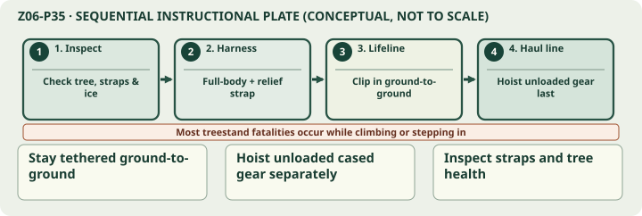

Z06-P35 · Hunting and fishing · New manuscript
Treestand Fall-Arrest Harness and Haul-Line Boundaries
Prevent fatal elevated falls and suspension trauma through full-body fall-arrest systems and unloaded gear hoisting.
When it applies · Elevated hunting stands during lawful seasons.
Equipment · TMA-certified full-body fall-arrest harness, lifeline tether, suspension-relief strap, separate haul line.

Actions
- Wear a manufacturer-certified full-body fall-arrest harness attached to a climbing lifeline from the moment feet leave the ground until returning safely to earth, carrying a suspension-relief strap to prevent harness suspension trauma.[H03]
- Never climb with a firearm, bow, or pack in hand; always hoist completely unloaded firearms (muzzle down) or hooded-quiver bows separately on a dedicated haul line after securing yourself.[H03]
- Inspect stand chains, ratchet straps, ladder joints, and the host tree for rot, dead limbs, or ice before every ascent, replacing weathered straps per manufacturer schedule.[H03, R15]
Failure recognition · Using a single waist belt, unhooking to step onto the platform, or hauling a loaded gun causes fatal falls and gunshot accidents.[H03]
Verify · Full-body harness, lifeline, relief strap, solid tree check, and unloaded haul line are verified before climbing.[H03]
Stop or change course · Stop climbing immediately if straps are frayed, steps are iced, tree bark/wood is decayed, or wind/fatigue impairs balance.[H03, R15]
Evidence and editorial notes
- H03 · Minnesota DNR · Firearms Safety Certification and Hunter Education (Current web edition)
- Section: Four fundamental firearm safety rules and certification · Conditions: Any firearm handling, transport, or field carry
Support: Treat every firearm as loaded, keep the muzzle in a safe direction, keep finger off the trigger until ready to shoot, and verify target and what is beyond it.
Limitations: Certification is required by age/statute in Minnesota; written summaries never substitute for formal certified safety instruction. · Conflicting evidence: None noted.
Editorial note: Mandatory Z06 bounded weapon-safety gate. · Specialist reviewer: Certified hunter-education and firearm safety instructor
Primary source · checked 2026-11-25
Current assessment · A04-H03 (2026-11-25) · Bounded support confirmed from an alternate source (A04): Basic safe handling principles only. No firing instruction, exercise or equipment qualification. Limits: Specialist review PENDING (Certified hunter-education and firearm safety instructor); publication HOLD. All release decisions pending. - R15 · Minnesota DNR · Native Trees of Minnesota Identification Reference (Current web edition)
- Section: Regional wood species, grain, bark, and moisture variability · Conditions: Dead downed wood and natural bast fibers in Upper Midwest forests
Support: Wood density, grain straightness, resin content, and decay state vary widely by species, tree part, and moisture history.
Limitations: Visual grain inspection cannot certify structural load capacity; avoid cutting live trees where prohibited and reject punky or cracked wood. · Conflicting evidence: None noted.
Editorial note: Reconciles B007 wood notes with material limits. · Specialist reviewer: Forestry and wood-science specialist
Primary source · checked 2026-11-25
Source lineage · New manuscript (Z06 P17 equipment safety) · Classification · New manuscript.